AThe ten non-negotiables
- Two brand colours, two jobs. Red
#DD382B= act: every button, every eyebrow, the urgent "No heat in January?" note, and the two statement bands (Services, Permit record). Navy#09263A= trust: headings, the utility bar, dark bands, stat tiles and the highlighted "this is us" cards. Blue#186AA4is only for information: "Read on Google" links, "HVAC here" notes and the selected district card. - Red never sits on red. On the red bands, buttons and pills flip to white. On navy and on the hero photo, the secondary button is a 1.5px white outline with a white label.
- Two fonts, no third. Ubuntu 700 for headings, numbers and buttons; Ubuntu 500 for nav and chips. Noto Sans for body, labels and forms. Headings are sentence case; only eyebrows, buttons and small tags are uppercase.
- Every action is a pill. Buttons are radius-full, Ubuntu 700 uppercase with +0.04em tracking: red fill on white and navy, white fill on red.
- Radii are 8 / 16 / 24 / full. 8 inputs, 16 service tiles and notes, 24 cards and panels, full for buttons, tags and chips. Nothing else.
- Shadows only on floating cards. The trust strip over the hero and the services panel over the red band are the only elements with a shadow. Everywhere else, depth = a change of surface or a 1px
--color-lineborder. - The owner is the proof. Rob is named in the hero lede, the "Who you're calling" block and the process. The promise on every page: the person who diagnoses your system is the person who quotes it.
- Never invent a price, a number or a review. Prices are permit medians labelled "median reported value" and sourced to City data. Reviews are quoted word for word from Google. Missing facts stay as a
[CONFIRM]note until verified. - Be honest about the permit record. Chicago doesn't permit HVAC repair, so City & Suburban's own count is shown as 0, every time. Never hide or round that number.
- Keep the band rhythm. Sections alternate white and fog, punctuated by navy (Scope and price) and red (Services, Permit record). Two fog bands, two navy bands or two red bands never touch.
BDesign tokens (summary)
| Role | Token | Value |
|---|---|---|
| Act | --color-red / --color-red-dk | #DD382B / #AF281D (hover, band gradient end) |
| Trust | --color-navy | #09263A · footer #071D2C |
| Information | --color-blue | #186AA4 |
| Text | --color-text / --color-muted | #3F4B55 / #6A7782 |
| Surfaces | --color-bg / --color-fog / --color-line | #FFFFFF / #F2F4F6 / #DCE2E7 |
| Ratings | (literal) | #F5A623 stars only |
| Editorial flag | (literal) | #FFF8E1 fill · #E3B341 dashed 2px · #8A6400 label |
| Coral | (literal) | #FF8A7F red-family text on navy |
| Radius | --radius-sm / md / lg / pill | 8 / 16 / 24 / 999px |
| Fonts | --font-display / --font-body | Ubuntu (500, 700) / Noto Sans (400, 600, 700) |
Type (desktop): H1 56/62 −0.015em · section H2 44/50 −0.01em · stat numerals 72/72 −0.02em · panel H3 28/34 · card titles 17–22 · lead 19/30 · body 16/25 · small 14/21 · eyebrow Noto Sans 700 13/16 uppercase +0.14em in red · buttons Ubuntu 700 14–16 uppercase +0.04em.
Frame: 1440px artboard, 80px side gutter, 1280px content. Section padding 96px top and bottom (88 on Reviews, 72 on Services, 56 on the hero). Card grid gaps 16–20px.
Full swatches, type specimens and live components: the design system page.
CPage anatomy (the standard order)
Every area page uses this order. Never reorder the services → owner → reviews → process → price → choose → area → permits → FAQ → CTA spine. Tap a block code to jump to its spec, or a band to open it on the template.
| Code | Block | Band | Purpose | Changes per area |
|---|---|---|---|---|
| G1 | Utility bar | navy 36px | tagline · hours · Finance / About / Contact | No |
| G2 | Header | white 89px | logo · nav · phone · Schedule service | No |
| B1 | Hero + request card | photo + navy scrim | where, what, who; two CTAs; the booking form; trust strip | Yes |
| B2 | Services | red → fog split | all 24 services in four tabbed groups | Heading only |
| B3 | Who you're calling | white | family, owner, rating, licence | Distance line |
| B4 | Reviews | fog | verbatim Google reviews, matched to the area's equipment | Yes |
| B5 | Process | white | six steps from first call to "good to go" | Minor |
| B6 | Scope and price | navy | median permit value + what moves the price here | Yes |
| B7 | How to choose | fog | five questions to ask any HVAC company | Heading only |
| B8 | Kinds of company | white | four company types and their limits | No |
| B9 | Districts | fog | the area's boundaries and sub-districts | Yes |
| B10 | Building types | white | what heats and cools the area's housing stock | Yes |
| B11 | Permit record | red gradient | the honest permit numbers | Area count |
| B12 | FAQ | white | five area questions, first one open | Yes |
| B13 | Closing CTA | navy card on white | call or schedule, with what to have ready | Last line |
| G3 | Footer | deep navy | logo · address · phone | No |
DThe block library
For every block: reference · layout (desktop 1440) · fields · per-area content · rules. Exact values: open the same layer in the Paper template artboard C&S — TEMPLATE West Loop area page (desktop). Tap any reference image to open that section on the live template.
G1Utility bar utilityBar · global
- Layout: navy, 10px × 80px padding, three groups spaced between: tagline (600, +0.02em) · hours (85% opacity) · Finance / About us / Contact us.
- Rule: global. One edit updates every page.
G2Header header · global
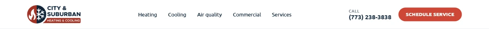
- Layout: white, 1px bottom line. Logo 56px tall (17:6) · nav in Ubuntu 500 15px navy (Heating, Cooling, Air quality, Commercial, Services) · "CALL" label + (773) 238-3838 in Ubuntu 700 18 · red pill "Schedule service".
B1Hero + request card heroRequest
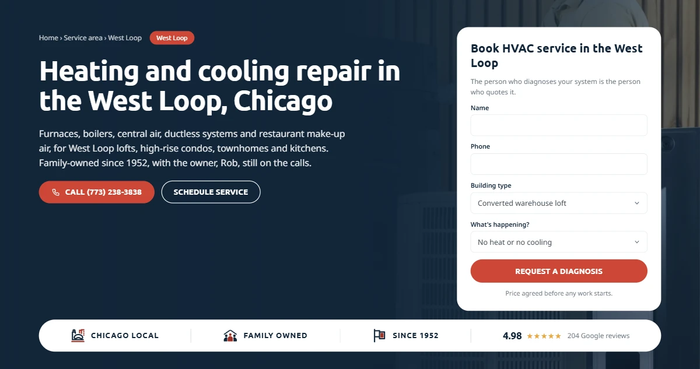
- Layout: full-bleed photo with a navy scrim running left (96%) to right. Left column ≤ 804px: breadcrumb (Home › Service area › Area) + red area pill → H1 white 56/62 → lead 19/30 at 90% white, max 640px → red "Call (773) 238-3838" with phone icon + white-outline "Schedule service". Right: white request card 420px, radius 24: title, promise line, Name, Phone, Building type (select), What's happening? (select), red full-width "Request a diagnosis", "Price agreed before any work starts." Bottom: white trust strip (radius full, floating shadow): Chicago local · Family owned · Since 1952 · 4.98 ★ 204 Google reviews.
- Fields: area, breadcrumb, h1, lede, heroImage, buildingTypeDefault, buildingTypeOptions[], issueOptions[].
- Per area: H1, lede (equipment + housing stock), card title "Book HVAC service in {area}", default building type (West Loop: converted warehouse loft · Lincoln Park: greystone two- or three-flat).
- Rule: H1 = "Heating and cooling repair in {area}, Chicago". The lede always ends "Family-owned since 1952, with the owner, Rob, still on the calls."
B2Services servicesTabs
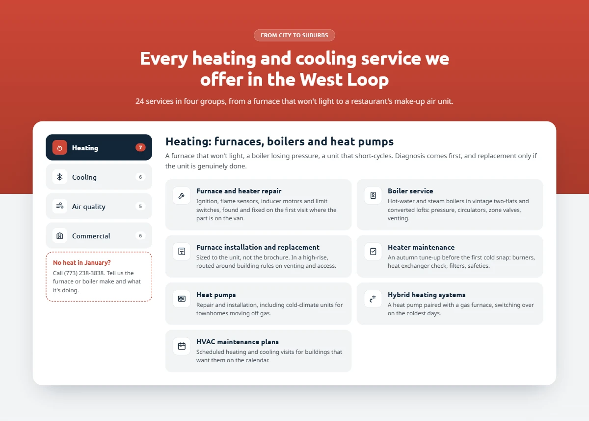
- Layout: red band that splits to fog at 46%. Centred head: translucent white pill "From city to suburbs" → H2 white → one-line summary. Below: white panel (radius 24, floating shadow). Left rail: four tabs with icon + count badge (Heating 7 · Cooling 6 · Air quality 5 · Commercial 6), the active one navy; under them the red dashed urgent note. Right: group title (H3 28/34) + lede, then a two-column grid of fog service tiles (radius 16): white icon badge, title, one or two lines.
- Fields: groups[]{name, icon, title, lede, services[]{icon, title, text}}, urgentNote.
- Concealment: all four groups render in the HTML; only the active tab is visible. Default = Heating.
- Per area: heading only ("Every heating and cooling service we offer in {area}"). Service copy may name local building types, as in "vintage two-flats and converted lofts".
B3Who you're calling ownerBand
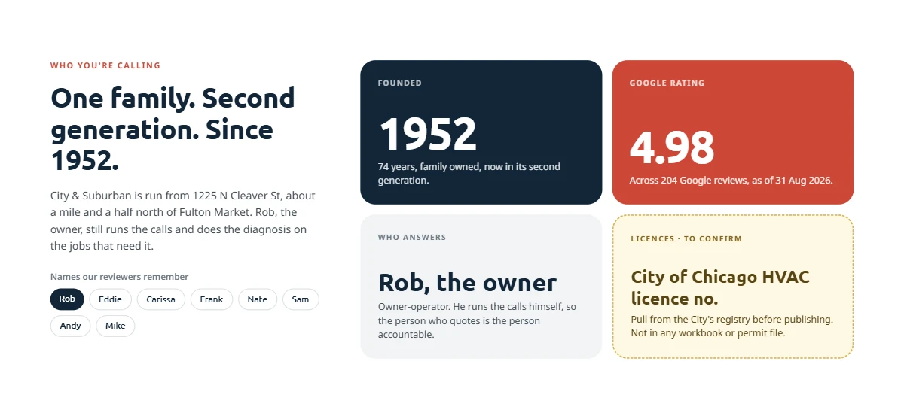
- Layout: left 430px: eyebrow → H2 "One family. Second generation. Since 1952." → paragraph → "Names our reviewers remember" chips (Rob selected, navy). Right: 2 × 2 tiles, radius 24, 230px tall: navy "Founded 1952" · red "Google rating 4.98" · fog "Who answers: Rob, the owner" · amber dashed "Licences · to confirm".
- Per area: the distance line, e.g. "about a mile and a half north of Fulton Market" or "just south-west of Lincoln Park across the river".
- Rule: reuse unchanged otherwise. The rating tile carries an "as of" date.
B4Reviews googleReviews
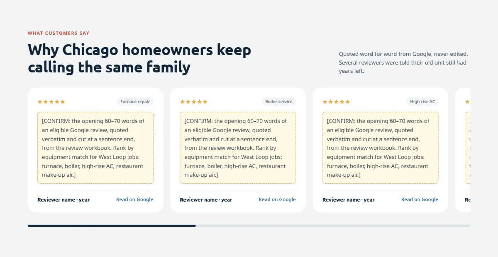
- Layout: fog band. Head row: eyebrow + H2 left, sourcing note right. A horizontal track of white review cards (392px, radius 24): gold stars, a fog service tag, a 60–70-word quote, reviewer name · year, blue "Read on Google". Six-pixel scroll indicator underneath.
- Fields: reviews[]{service, text, name, year, url}.
- Per area: which reviews, ranked by equipment match to the area (West Loop: furnace, boiler, high-rise AC, make-up air · Lincoln Park: boiler, radiator, steam, furnace first).
- Rule: the opening 60–70 words of an eligible review, quoted verbatim and cut at a sentence end. Never edit, merge or paraphrase.
B5Process processSteps
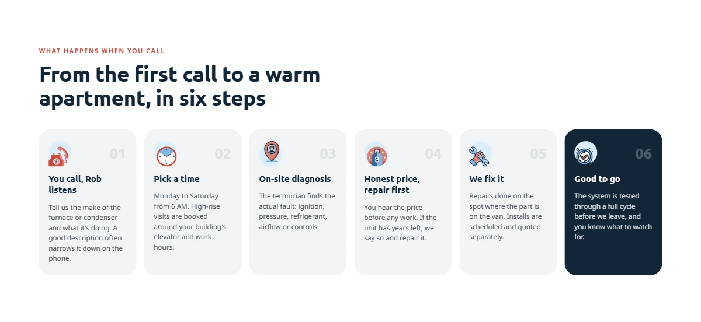
- Layout: six equal step cards in a row (fog, radius 24): illustrated icon on a pale circle, a large pale step number (01–06) top right, title, short text. Step 06 "Good to go" is the navy highlight.
- Per area: step 02 names the area's access constraint (West Loop: elevator and building work hours).
B6Scope and price priceFactors · NAVY
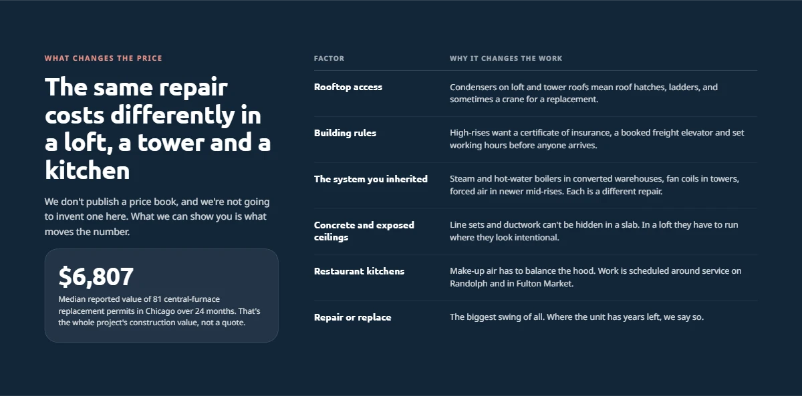
- Layout: navy. Left 420px: coral eyebrow → H2 white → "We don't publish a price book" paragraph → raised stat card: big median value + what it measures. Right: a two-column factor table (Factor · Why it changes the work), six rows, hairline dividers, no boxes.
- Fields: heading, median{value, caption, source}, factors[6]{title, text}.
- Per area: the H2 names the area's three building types ("in a loft, a tower and a kitchen" · "in a greystone, a cottage and a tower") and all six factors. The last factor is always "Repair or replace".
B7How to choose questionsToAsk
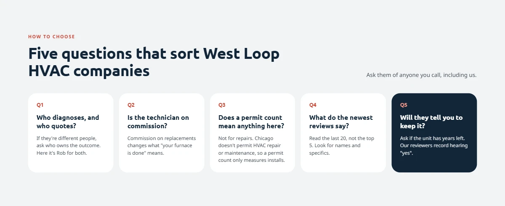
- Layout: fog. Five white question cards (Q1–Q5) in a row; Q5 "Will they tell you to keep it?" is the navy highlight. "Ask them of anyone you call, including us." right of the head.
- Per area: heading only ("Five questions that sort {area} HVAC companies").
B8Kinds of company companyTypes
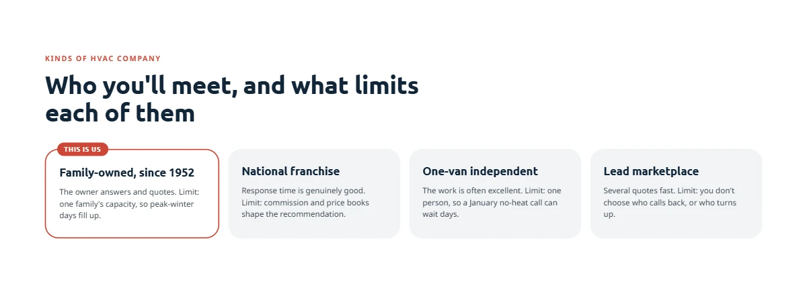
- Layout: four cards: Family-owned since 1952 (white, 1.5px red border, red "This is us" tab on the top edge) · National franchise · One-van independent · Lead marketplace (fog). Each states one strength and one "Limit:".
- Rule: identical on every page. Be fair to competitors; every type gets a real strength.
B9Districts areaDistricts
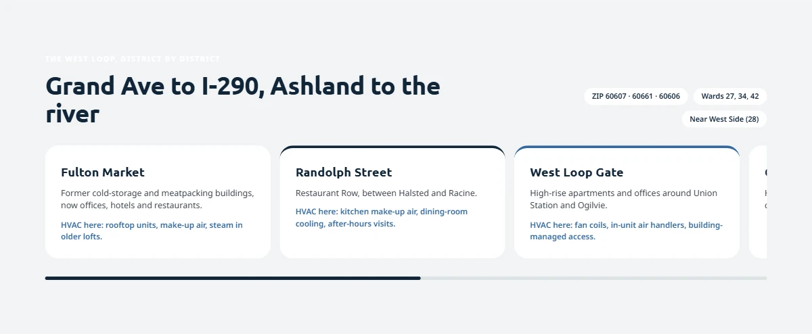
- Layout: fog. H2 = the boundaries ("Grand Ave to I-290, Ashland to the river"). Right of the head: chips for ZIP codes, wards and community area (number). Below: a track of district cards (white, radius 24): name, one-line character, blue "HVAC here:" note. The active card carries a 5px top rule; a navy progress bar sits under the track.
- Fields: boundaries, zips[], wards[], communityArea{name, number}, districts[]{name, text, hvacHere}.
- Per area: everything. 3–5 districts.
B10Building types buildingTypes
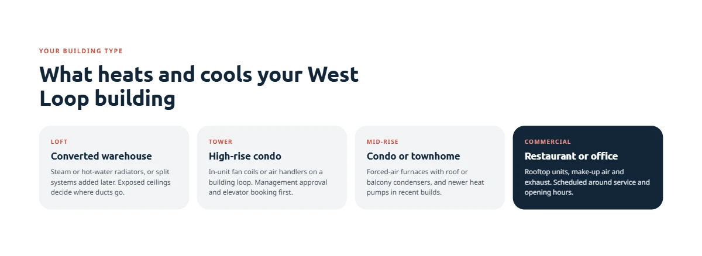
- Layout: exactly four cards: uppercase type tag (LOFT, TOWER…), name, what heats and cools it. The fourth card is the navy highlight.
- Per area: all four, from the area's real housing stock.
B11Permit record permitRecord · RED
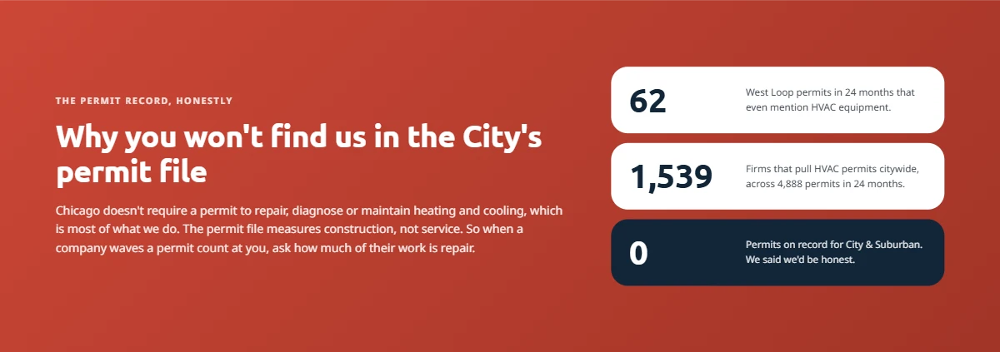
- Layout: red diagonal gradient. Left: eyebrow "The permit record, honestly" → H2 "Why you won't find us in the City's permit file" → explanation. Right: three white stat rows: area HVAC permits (24 months) · firms pulling HVAC permits citywide · 0 on a navy row.
- Per area: the area permit count only (West Loop 62 · Lincoln Park 42).
B12FAQ faqSplit
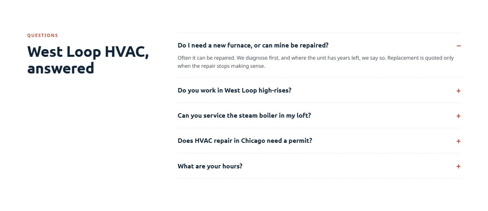
- Layout: left 380px: eyebrow "Questions" + H2 "{area} HVAC, answered". Right: five accordion rows, hairline dividers, red +/–. The first is open.
- Per area: questions 1–3 are about the area's equipment and buildings; "Does HVAC repair in Chicago need a permit?" and "What are your hours?" stay.
- Concealment: every answer is in the HTML (
<details>), and the page carries FAQPage structured data.
B13Closing CTA closingCta
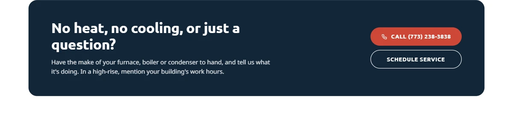
- Layout: navy card (radius 24) inside the white band: H2 "No heat, no cooling, or just a question?" + what to have ready; red "Call" and white-outline "Schedule service" stacked right.
- Per area: the last sentence names the local access detail ("In a high-rise, mention your building's work hours" · "In a condo, mention who handles the shared boiler").
G3Footer footer · global
- Layout: deep navy
#071D2C: logo, "1225 N Cleaver St, Chicago, IL 60642 · Family owned since 1952", phone in Ubuntu 700.
EArea content → block rules
| If the area research gives you… | It goes in |
|---|---|
| The area's name, its main equipment and its housing stock | B1 H1, lede and default building type |
| How far the area is from 1225 N Cleaver St | B3 paragraph |
| Google reviews mentioning the area's typical equipment | B4, ranked by equipment match |
| Access constraints (elevators, alleys, basements, associations) | B5 step 02, B6 factors, B13 last line |
| What makes work cost more or less here | B6: exactly six factors, the last always "Repair or replace" |
| Boundaries, ZIPs, wards, community area | B9 heading and chips |
| Named sub-districts or micro-neighbourhoods | B9 district cards (3–5) |
| Typical building types | B10: exactly four |
| City of Chicago HVAC permits in the area (24 months) | B11 first stat |
| Questions people in that area actually ask | B12 questions 1–3 |
| Anything you can't verify | A [CONFIRM: …] note in the field, never invented copy |
FCopy & voice rules
- Plain, specific, local. Name the equipment ("steam boilers in converted warehouses") and the place ("Randolph and Fulton Market"). No "top-rated", "best-in-class" or "one-stop shop".
- Repair first. Every page repeats the promise: diagnosis first, and where the unit has years left, we say so.
- The owner by name. "Rob, the owner" in the hero lede and in B3. Other names appear only as "names our reviewers remember".
- Headline patterns: H1 "Heating and cooling repair in {area}, Chicago". Section H2s are statements or the buyer's question, in sentence case.
- Honest numbers only: every figure has a source (Part G), and the permit count of 0 is never left out.
- Keep the words, hide the length. Inactive service tabs, FAQ answers after the first, and the full review text stay in the HTML behind a click. Never load hidden copy with JavaScript after the page loads.
[CONFIRM]notes are editorial flags shown in the amber dashed style in drafts only. A published page contains none.
GFacts, numbers & sources
| Fact | Current value | Source |
|---|---|---|
| Founded | 1952 · family owned, second generation | Company |
| Owner | Rob | Company |
| Address | 1225 N Cleaver St, Chicago, IL 60642 | Company |
| Phone | (773) 238-3838 | Company |
| Hours | Mon–Fri 6:00 AM – 6:00 PM · Sat 6:00 AM – 3:30 PM | Company |
| Google rating | 4.98 across 204 reviews, as of 31 Aug 2026 | Google Business Profile (refresh the "as of" date) |
| Median furnace replacement value | $6,807 (81 permits, 24 months) | City of Chicago building permits |
| Citywide HVAC permit firms | 1,539 firms across 4,888 permits (24 months) | City of Chicago building permits |
| Area HVAC permits | West Loop 62 · Lincoln Park 42 (24 months) | City of Chicago building permits, filtered to the area |
| City & Suburban permits on record | 0 | City of Chicago building permits |
| HVAC licence number | [CONFIRM] | City of Chicago licence registry |
| Review quotes | [CONFIRM] on both pages | Review workbook (verbatim Google reviews) |
HBuild & responsive notes
- Tokens: copy the
:rootblock from the design system page. Never hard-code a brand hex that has a token. - Fonts: Google Fonts: Ubuntu 500/700 and Noto Sans 400/600/700. Nothing else loads.
- Exact values: select the layer in the Paper template. Layer names match the block names in Part C. With Claude Code + Paper MCP, pull
get_jsx/get_computed_stylesfor that node. - Interactive parts: service tabs and FAQ use real buttons or
<details>with keyboard support. Review and district tracks scroll horizontally with scroll-snap. - Structured data: LocalBusiness (HVACBusiness) + Service + FAQPage (from B12) + BreadcrumbList.
Responsive (mobile is not drawn yet, so follow these rules):
- < 768px: side gutter 16px, section padding 64px, H1 36–40px, H2 30–32px. Every split layout stacks: copy first, then the card or table.
- B1: the request card drops below the hero copy, and the trust strip wraps into a 2 × 2 grid.
- B2: the tab rail becomes a horizontal row of pills above the panel, and tiles go to one column.
- B5, B7, B8, B10: horizontal scroll-snap rows of cards at about 80% width.
- B6 factor table: label above text. B3 and B11 tiles: one column.
IWorkflow for every new area
- Brief: the area name and its boundaries, ZIPs, wards and community area.
- Research: housing stock, sub-districts, access constraints and the equipment that's typical there. Pull the area's 24-month HVAC permit count from City data.
- Reviews: pick verbatim Google reviews from the review workbook, ranked by equipment match. If none are eligible, leave the
[CONFIRM]note. - Write the per-area fields only (Part C, last column), following Part E and Part F.
- Design: duplicate the West Loop template artboard in Paper, rename it "C&S — {area} area page (desktop)" and swap the text. Don't restyle.
- Publish the preview to this site and add it to the page switcher.
- QC with Part J, clear every
[CONFIRM], then publish.
JPre-publish QC checklist
Tap to tick. Your ticks are saved in this browser only.
Design system
Content
Function
KOpen decisions
- Licence number: the City of Chicago HVAC licence number isn't in any workbook. Pull it from the City registry before any page goes live.
- Reviews: both pages still have
[CONFIRM]placeholders in B4. They need verbatim quotes from the review workbook. - Spelling: the template uses "Licences" (British). Decide on US "Licenses" for a Chicago audience and apply it everywhere.
- Mobile: mobile frames aren't drawn in Paper yet. The Part H rules apply until they are.
- Districts eyebrow contrast: on the template, the B9 eyebrow ("The West Loop, district by district") is white on fog and effectively invisible. Fix it to red like every other eyebrow, in Paper and in the build.
- Hero photo: confirm the hero image is City & Suburban's own or licensed. If it could be read as their own work and isn't, add an "Illustrative photo" label.